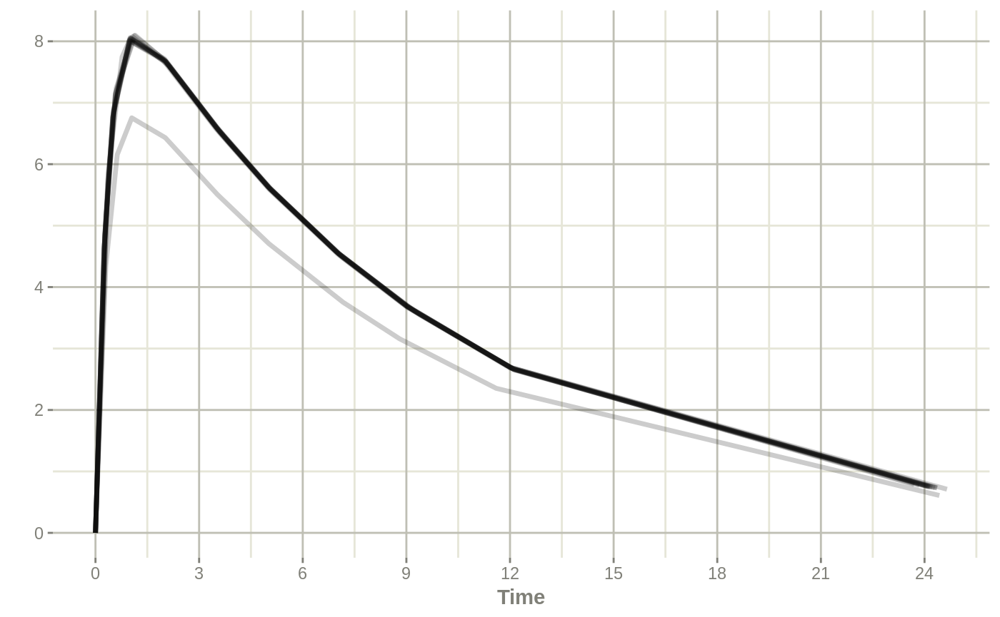

RxODE-prior-data.Rmdlibrary(RxODE)RxODE can use a single subject or multiple subjects with a single event table to solve ODEs. Additionally, RxODE can use an arbitrary data frame with individualized events. For example when using nlmixr, you could use the theo_sd data frame
## Load data from nlmixr
d <- nlmixr::theo_sd
## Create RxODE model
theo <- RxODE({
tka ~ 0.45 # Log Ka
tcl ~ 1 # Log Cl
tv ~ 3.45 # Log V
eta.ka ~ 0.6
eta.cl ~ 0.3
eta.v ~ 0.1
ka <- exp(tka + eta.ka)
cl <- exp(tcl + eta.cl)
v <- exp(tv + eta.v)
d/dt(depot) = -ka * depot
d/dt(center) = ka * depot - cl / v * center
cp = center / v
})
## Create parameter dataset
library(dplyr)
#>
#> Attaching package: 'dplyr'
#> The following objects are masked from 'package:stats':
#>
#> filter, lag
#> The following objects are masked from 'package:base':
#>
#> intersect, setdiff, setequal, union
parsDf <- tribble(
~ eta.ka, ~ eta.cl, ~ eta.v,
0.105, -0.487, -0.080,
0.221, 0.144, 0.021,
0.368, 0.031, 0.058,
-0.277, -0.015, -0.007,
-0.046, -0.155, -0.142,
-0.382, 0.367, 0.203,
-0.791, 0.160, 0.047,
-0.181, 0.168, 0.096,
1.420, 0.042, 0.012,
-0.738, -0.391, -0.170,
0.790, 0.281, 0.146,
-0.527, -0.126, -0.198) %>%
mutate(tka = 0.451, tcl = 1.017, tv = 3.449)
## Now solve the dataset
solveData <- rxSolve(theo, parsDf, d)
plot(solveData, cp)
print(solveData)
#> ▂▂▂▂▂▂▂▂▂▂▂▂▂▂▂▂▂▂▂▂▂▂▂▂▂▂▂ Solved RxODE object ▂▂▂▂▂▂▂▂▂▂▂▂▂▂▂▂▂▂▂▂▂▂▂▂▂▂▂
#> ── Initial Conditions ($inits): ───────────────────────────────────────────
#> depot center
#> 0 0
#> ── First part of data (object): ───────────────────────────────────────────
#> # A tibble: 132 x 8
#> id time ka cl v cp depot center
#> <fct> <dbl> <dbl> <dbl> <dbl> <dbl> <dbl> <dbl>
#> 1 1 0 2.86 3.67 34.8 0 320. 0
#> 2 1 0.25 2.86 3.67 34.8 4.62 157. 161.
#> 3 1 0.570 2.86 3.67 34.8 7.12 62.8 248.
#> 4 1 1.12 2.86 3.67 34.8 8.09 13.0 282.
#> 5 1 2.02 2.86 3.67 34.8 7.68 0.996 267.
#> 6 1 3.82 2.86 3.67 34.8 6.38 0.00581 222.
#> # … with 126 more rows
#> ▂▂▂▂▂▂▂▂▂▂▂▂▂▂▂▂▂▂▂▂▂▂▂▂▂▂▂▂▂▂▂▂▂▂▂▂▂▂▂▂▂▂▂▂▂▂▂▂▂▂▂▂▂▂▂▂▂▂▂▂▂▂▂▂▂▂▂▂▂▂▂▂▂▂▂
## Of course the fasest way to solve if you don't care about the RxODE extra parameters is
solveData <- rxSolve(theo, parsDf, d, returnType="data.frame")
## solved data
dplyr::as.tbl(solveData)| id | time | ka | cl | v | cp | depot | center |
| 1 | 0 | 2.86 | 3.67 | 34.8 | 0 | 320 | 0 |
| 1 | 0.25 | 2.86 | 3.67 | 34.8 | 4.62 | 157 | 161 |
| 1 | 0.57 | 2.86 | 3.67 | 34.8 | 7.12 | 62.8 | 248 |
| 1 | 1.12 | 2.86 | 3.67 | 34.8 | 8.09 | 13 | 282 |
| 1 | 2.02 | 2.86 | 3.67 | 34.8 | 7.68 | 0.996 | 267 |
| 1 | 3.82 | 2.86 | 3.67 | 34.8 | 6.38 | 0.00581 | 222 |
| 1 | 5.1 | 2.86 | 3.67 | 34.8 | 5.58 | 0.00015 | 194 |
| 1 | 7.03 | 2.86 | 3.67 | 34.8 | 4.55 | 6.02e-07 | 158 |
| 1 | 9.05 | 2.86 | 3.67 | 34.8 | 3.68 | 1.77e-09 | 128 |
| 1 | 12.1 | 2.86 | 3.67 | 34.8 | 2.66 | 9.43e-09 | 92.6 |
| 1 | 24.4 | 2.86 | 3.67 | 34.8 | 0.731 | -3.22e-10 | 25.5 |
| 2 | 0 | 2.86 | 3.67 | 34.8 | 0 | 319 | 0 |
| 2 | 0.27 | 2.86 | 3.67 | 34.8 | 4.84 | 147 | 169 |
| 2 | 0.52 | 2.86 | 3.67 | 34.8 | 6.84 | 72.1 | 238 |
| 2 | 1 | 2.86 | 3.67 | 34.8 | 8.01 | 18.3 | 279 |
| 2 | 1.92 | 2.86 | 3.67 | 34.8 | 7.72 | 1.32 | 269 |
| 2 | 3.5 | 2.86 | 3.67 | 34.8 | 6.57 | 0.0144 | 229 |
| 2 | 5.02 | 2.86 | 3.67 | 34.8 | 5.6 | 0.000188 | 195 |
| 2 | 7.03 | 2.86 | 3.67 | 34.8 | 4.53 | 6e-07 | 158 |
| 2 | 9 | 2.86 | 3.67 | 34.8 | 3.68 | 2.04e-09 | 128 |
| 2 | 12 | 2.86 | 3.67 | 34.8 | 2.68 | 8.59e-09 | 93.4 |
| 2 | 24.3 | 2.86 | 3.67 | 34.8 | 0.734 | -2.76e-10 | 25.5 |
| 3 | 0 | 2.86 | 3.67 | 34.8 | 0 | 319 | 0 |
| 3 | 0.27 | 2.86 | 3.67 | 34.8 | 4.85 | 148 | 169 |
| 3 | 0.58 | 2.86 | 3.67 | 34.8 | 7.14 | 60.9 | 249 |
| 3 | 1.02 | 2.86 | 3.67 | 34.8 | 8.04 | 17.3 | 280 |
| 3 | 2.02 | 2.86 | 3.67 | 34.8 | 7.67 | 0.994 | 267 |
| 3 | 3.62 | 2.86 | 3.67 | 34.8 | 6.5 | 0.0103 | 226 |
| 3 | 5.08 | 2.86 | 3.67 | 34.8 | 5.58 | 0.000158 | 194 |
| 3 | 7.07 | 2.86 | 3.67 | 34.8 | 4.52 | 5.36e-07 | 157 |
| 3 | 9 | 2.86 | 3.67 | 34.8 | 3.69 | 2.04e-09 | 128 |
| 3 | 12.2 | 2.86 | 3.67 | 34.8 | 2.65 | 8.63e-09 | 92.1 |
| 3 | 24.2 | 2.86 | 3.67 | 34.8 | 0.746 | 7.37e-11 | 26 |
| 4 | 0 | 2.86 | 3.67 | 34.8 | 0 | 320 | 0 |
| 4 | 0.35 | 2.86 | 3.67 | 34.8 | 5.69 | 118 | 198 |
| 4 | 0.6 | 2.86 | 3.67 | 34.8 | 7.24 | 57.6 | 252 |
| 4 | 1.07 | 2.86 | 3.67 | 34.8 | 8.07 | 15 | 281 |
| 4 | 2.13 | 2.86 | 3.67 | 34.8 | 7.6 | 0.727 | 265 |
| 4 | 3.5 | 2.86 | 3.67 | 34.8 | 6.6 | 0.0145 | 230 |
| 4 | 5.02 | 2.86 | 3.67 | 34.8 | 5.62 | 0.000188 | 196 |
| 4 | 7.02 | 2.86 | 3.67 | 34.8 | 4.55 | 6.2e-07 | 158 |
| 4 | 9.02 | 2.86 | 3.67 | 34.8 | 3.69 | 1.93e-09 | 128 |
| 4 | 12 | 2.86 | 3.67 | 34.8 | 2.7 | 8.13e-09 | 94 |
| 4 | 24.6 | 2.86 | 3.67 | 34.8 | 0.71 | 1.38e-10 | 24.7 |
| 5 | 0 | 2.86 | 3.67 | 34.8 | 0 | 320 | 0 |
| 5 | 0.3 | 2.86 | 3.67 | 34.8 | 5.2 | 136 | 181 |
| 5 | 0.52 | 2.86 | 3.67 | 34.8 | 6.87 | 72.4 | 239 |
| 5 | 1 | 2.86 | 3.67 | 34.8 | 8.04 | 18.4 | 280 |
| 5 | 2.02 | 2.86 | 3.67 | 34.8 | 7.68 | 0.996 | 267 |
| 5 | 3.5 | 2.86 | 3.67 | 34.8 | 6.6 | 0.0145 | 230 |
| 5 | 5.02 | 2.86 | 3.67 | 34.8 | 5.62 | 0.000188 | 196 |
| 5 | 7.02 | 2.86 | 3.67 | 34.8 | 4.55 | 6.2e-07 | 159 |
| 5 | 9.1 | 2.86 | 3.67 | 34.8 | 3.66 | 1.54e-09 | 127 |
| 5 | 12 | 2.86 | 3.67 | 34.8 | 2.69 | 8.3e-09 | 93.8 |
| 5 | 24.4 | 2.86 | 3.67 | 34.8 | 0.733 | -3.44e-10 | 25.5 |
| 6 | 0 | 2.86 | 3.67 | 34.8 | 0 | 320 | 0 |
| 6 | 0.27 | 2.86 | 3.67 | 34.8 | 4.86 | 148 | 169 |
| 6 | 0.58 | 2.86 | 3.67 | 34.8 | 7.16 | 61 | 249 |
| 6 | 1.15 | 2.86 | 3.67 | 34.8 | 8.1 | 12 | 282 |
| 6 | 2.03 | 2.86 | 3.67 | 34.8 | 7.68 | 0.968 | 267 |
| 6 | 3.57 | 2.86 | 3.67 | 34.8 | 6.55 | 0.0119 | 228 |
| 6 | 5 | 2.86 | 3.67 | 34.8 | 5.63 | 0.000199 | 196 |
| 6 | 7 | 2.86 | 3.67 | 34.8 | 4.56 | 6.56e-07 | 159 |
| 6 | 9.22 | 2.86 | 3.67 | 34.8 | 3.61 | 1.08e-09 | 126 |
| 6 | 12.1 | 2.86 | 3.67 | 34.8 | 2.67 | 9.24e-09 | 92.8 |
| 6 | 23.9 | 2.86 | 3.67 | 34.8 | 0.773 | -4.77e-10 | 26.9 |
| 7 | 0 | 2.86 | 3.67 | 34.8 | 0 | 320 | 0 |
| 7 | 0.25 | 2.86 | 3.67 | 34.8 | 4.62 | 157 | 161 |
| 7 | 0.5 | 2.86 | 3.67 | 34.8 | 6.76 | 76.6 | 235 |
| 7 | 1.02 | 2.86 | 3.67 | 34.8 | 8.05 | 17.3 | 280 |
| 7 | 2.02 | 2.86 | 3.67 | 34.8 | 7.68 | 0.995 | 267 |
| 7 | 3.48 | 2.86 | 3.67 | 34.8 | 6.61 | 0.0153 | 230 |
| 7 | 5 | 2.86 | 3.67 | 34.8 | 5.63 | 0.000199 | 196 |
| 7 | 6.98 | 2.86 | 3.67 | 34.8 | 4.57 | 6.95e-07 | 159 |
| 7 | 9 | 2.86 | 3.67 | 34.8 | 3.69 | 2.05e-09 | 129 |
| 7 | 12.1 | 2.86 | 3.67 | 34.8 | 2.68 | 8.2e-09 | 93.2 |
| 7 | 24.2 | 2.86 | 3.67 | 34.8 | 0.743 | 1.01e-10 | 25.9 |
| 8 | 0 | 2.86 | 3.67 | 34.8 | 0 | 319 | 0 |
| 8 | 0.25 | 2.86 | 3.67 | 34.8 | 4.61 | 156 | 161 |
| 8 | 0.52 | 2.86 | 3.67 | 34.8 | 6.86 | 72.3 | 239 |
| 8 | 0.98 | 2.86 | 3.67 | 34.8 | 8.01 | 19.4 | 279 |
| 8 | 2.02 | 2.86 | 3.67 | 34.8 | 7.67 | 0.994 | 267 |
| 8 | 3.53 | 2.86 | 3.67 | 34.8 | 6.57 | 0.0133 | 229 |
| 8 | 5.05 | 2.86 | 3.67 | 34.8 | 5.59 | 0.000173 | 195 |
| 8 | 7.15 | 2.86 | 3.67 | 34.8 | 4.48 | 4.27e-07 | 156 |
| 8 | 9.07 | 2.86 | 3.67 | 34.8 | 3.66 | 1.67e-09 | 127 |
| 8 | 12.1 | 2.86 | 3.67 | 34.8 | 2.66 | 8.61e-09 | 92.6 |
| 8 | 24.1 | 2.86 | 3.67 | 34.8 | 0.75 | 7.04e-11 | 26.1 |
| 9 | 0 | 2.86 | 3.67 | 34.8 | 0 | 268 | 0 |
| 9 | 0.3 | 2.86 | 3.67 | 34.8 | 4.35 | 114 | 151 |
| 9 | 0.63 | 2.86 | 3.67 | 34.8 | 6.16 | 44.3 | 214 |
| 9 | 1.05 | 2.86 | 3.67 | 34.8 | 6.75 | 13.3 | 235 |
| 9 | 2.02 | 2.86 | 3.67 | 34.8 | 6.43 | 0.834 | 224 |
| 9 | 3.53 | 2.86 | 3.67 | 34.8 | 5.51 | 0.0111 | 192 |
| 9 | 5.02 | 2.86 | 3.67 | 34.8 | 4.71 | 0.000158 | 164 |
| 9 | 7.17 | 2.86 | 3.67 | 34.8 | 3.75 | 3.38e-07 | 131 |
| 9 | 8.8 | 2.86 | 3.67 | 34.8 | 3.16 | 3.09e-09 | 110 |
| 9 | 11.6 | 2.86 | 3.67 | 34.8 | 2.35 | 3.23e-09 | 81.9 |
| 9 | 24.4 | 2.86 | 3.67 | 34.8 | 0.608 | 9.02e-11 | 21.2 |
| 10 | 0 | 2.86 | 3.67 | 34.8 | 0 | 320 | 0 |
| 10 | 0.37 | 2.86 | 3.67 | 34.8 | 5.87 | 111 | 204 |
| 10 | 0.77 | 2.86 | 3.67 | 34.8 | 7.75 | 35.5 | 270 |
| 10 | 1.02 | 2.86 | 3.67 | 34.8 | 8.06 | 17.4 | 280 |
| 10 | 2.05 | 2.86 | 3.67 | 34.8 | 7.66 | 0.914 | 267 |
| 10 | 3.55 | 2.86 | 3.67 | 34.8 | 6.57 | 0.0126 | 229 |
| 10 | 5.05 | 2.86 | 3.67 | 34.8 | 5.61 | 0.000173 | 195 |
| 10 | 7.08 | 2.86 | 3.67 | 34.8 | 4.53 | 5.23e-07 | 158 |
| 10 | 9.38 | 2.86 | 3.67 | 34.8 | 3.55 | 6.77e-10 | 124 |
| 10 | 12.1 | 2.86 | 3.67 | 34.8 | 2.67 | 9.19e-09 | 92.8 |
| 10 | 23.7 | 2.86 | 3.67 | 34.8 | 0.785 | -4.22e-10 | 27.3 |
| 11 | 0 | 2.86 | 3.67 | 34.8 | 0 | 320 | 0 |
| 11 | 0.25 | 2.86 | 3.67 | 34.8 | 4.62 | 157 | 161 |
| 11 | 0.5 | 2.86 | 3.67 | 34.8 | 6.76 | 76.6 | 235 |
| 11 | 0.98 | 2.86 | 3.67 | 34.8 | 8.02 | 19.4 | 279 |
| 11 | 1.98 | 2.86 | 3.67 | 34.8 | 7.71 | 1.12 | 268 |
| 11 | 3.6 | 2.86 | 3.67 | 34.8 | 6.53 | 0.0109 | 227 |
| 11 | 5.02 | 2.86 | 3.67 | 34.8 | 5.62 | 0.000188 | 196 |
| 11 | 7.03 | 2.86 | 3.67 | 34.8 | 4.55 | 6.02e-07 | 158 |
| 11 | 9.03 | 2.86 | 3.67 | 34.8 | 3.68 | 1.88e-09 | 128 |
| 11 | 12.1 | 2.86 | 3.67 | 34.8 | 2.66 | 8.31e-09 | 92.6 |
| 11 | 24.1 | 2.86 | 3.67 | 34.8 | 0.754 | 6.59e-11 | 26.2 |
| 12 | 0 | 2.86 | 3.67 | 34.8 | 0 | 321 | 0 |
| 12 | 0.25 | 2.86 | 3.67 | 34.8 | 4.63 | 157 | 161 |
| 12 | 0.5 | 2.86 | 3.67 | 34.8 | 6.78 | 76.8 | 236 |
| 12 | 1 | 2.86 | 3.67 | 34.8 | 8.06 | 18.4 | 281 |
| 12 | 2 | 2.86 | 3.67 | 34.8 | 7.71 | 1.06 | 269 |
| 12 | 3.52 | 2.86 | 3.67 | 34.8 | 6.6 | 0.0137 | 230 |
| 12 | 5.07 | 2.86 | 3.67 | 34.8 | 5.6 | 0.000164 | 195 |
| 12 | 7.07 | 2.86 | 3.67 | 34.8 | 4.54 | 5.39e-07 | 158 |
| 12 | 9.03 | 2.86 | 3.67 | 34.8 | 3.69 | 1.88e-09 | 129 |
| 12 | 12.1 | 2.86 | 3.67 | 34.8 | 2.69 | 8.46e-09 | 93.5 |
| 12 | 24.1 | 2.86 | 3.67 | 34.8 | 0.75 | -4.78e-10 | 26.1 |
data.table::data.table(solveData)| id | time | ka | cl | v | cp | depot | center |
| 1 | 0 | 2.86 | 3.67 | 34.8 | 0 | 320 | 0 |
| 1 | 0.25 | 2.86 | 3.67 | 34.8 | 4.62 | 157 | 161 |
| 1 | 0.57 | 2.86 | 3.67 | 34.8 | 7.12 | 62.8 | 248 |
| 1 | 1.12 | 2.86 | 3.67 | 34.8 | 8.09 | 13 | 282 |
| 1 | 2.02 | 2.86 | 3.67 | 34.8 | 7.68 | 0.996 | 267 |
| 1 | 3.82 | 2.86 | 3.67 | 34.8 | 6.38 | 0.00581 | 222 |
| 1 | 5.1 | 2.86 | 3.67 | 34.8 | 5.58 | 0.00015 | 194 |
| 1 | 7.03 | 2.86 | 3.67 | 34.8 | 4.55 | 6.02e-07 | 158 |
| 1 | 9.05 | 2.86 | 3.67 | 34.8 | 3.68 | 1.77e-09 | 128 |
| 1 | 12.1 | 2.86 | 3.67 | 34.8 | 2.66 | 9.43e-09 | 92.6 |
| 1 | 24.4 | 2.86 | 3.67 | 34.8 | 0.731 | -3.22e-10 | 25.5 |
| 2 | 0 | 2.86 | 3.67 | 34.8 | 0 | 319 | 0 |
| 2 | 0.27 | 2.86 | 3.67 | 34.8 | 4.84 | 147 | 169 |
| 2 | 0.52 | 2.86 | 3.67 | 34.8 | 6.84 | 72.1 | 238 |
| 2 | 1 | 2.86 | 3.67 | 34.8 | 8.01 | 18.3 | 279 |
| 2 | 1.92 | 2.86 | 3.67 | 34.8 | 7.72 | 1.32 | 269 |
| 2 | 3.5 | 2.86 | 3.67 | 34.8 | 6.57 | 0.0144 | 229 |
| 2 | 5.02 | 2.86 | 3.67 | 34.8 | 5.6 | 0.000188 | 195 |
| 2 | 7.03 | 2.86 | 3.67 | 34.8 | 4.53 | 6e-07 | 158 |
| 2 | 9 | 2.86 | 3.67 | 34.8 | 3.68 | 2.04e-09 | 128 |
| 2 | 12 | 2.86 | 3.67 | 34.8 | 2.68 | 8.59e-09 | 93.4 |
| 2 | 24.3 | 2.86 | 3.67 | 34.8 | 0.734 | -2.76e-10 | 25.5 |
| 3 | 0 | 2.86 | 3.67 | 34.8 | 0 | 319 | 0 |
| 3 | 0.27 | 2.86 | 3.67 | 34.8 | 4.85 | 148 | 169 |
| 3 | 0.58 | 2.86 | 3.67 | 34.8 | 7.14 | 60.9 | 249 |
| 3 | 1.02 | 2.86 | 3.67 | 34.8 | 8.04 | 17.3 | 280 |
| 3 | 2.02 | 2.86 | 3.67 | 34.8 | 7.67 | 0.994 | 267 |
| 3 | 3.62 | 2.86 | 3.67 | 34.8 | 6.5 | 0.0103 | 226 |
| 3 | 5.08 | 2.86 | 3.67 | 34.8 | 5.58 | 0.000158 | 194 |
| 3 | 7.07 | 2.86 | 3.67 | 34.8 | 4.52 | 5.36e-07 | 157 |
| 3 | 9 | 2.86 | 3.67 | 34.8 | 3.69 | 2.04e-09 | 128 |
| 3 | 12.2 | 2.86 | 3.67 | 34.8 | 2.65 | 8.63e-09 | 92.1 |
| 3 | 24.2 | 2.86 | 3.67 | 34.8 | 0.746 | 7.37e-11 | 26 |
| 4 | 0 | 2.86 | 3.67 | 34.8 | 0 | 320 | 0 |
| 4 | 0.35 | 2.86 | 3.67 | 34.8 | 5.69 | 118 | 198 |
| 4 | 0.6 | 2.86 | 3.67 | 34.8 | 7.24 | 57.6 | 252 |
| 4 | 1.07 | 2.86 | 3.67 | 34.8 | 8.07 | 15 | 281 |
| 4 | 2.13 | 2.86 | 3.67 | 34.8 | 7.6 | 0.727 | 265 |
| 4 | 3.5 | 2.86 | 3.67 | 34.8 | 6.6 | 0.0145 | 230 |
| 4 | 5.02 | 2.86 | 3.67 | 34.8 | 5.62 | 0.000188 | 196 |
| 4 | 7.02 | 2.86 | 3.67 | 34.8 | 4.55 | 6.2e-07 | 158 |
| 4 | 9.02 | 2.86 | 3.67 | 34.8 | 3.69 | 1.93e-09 | 128 |
| 4 | 12 | 2.86 | 3.67 | 34.8 | 2.7 | 8.13e-09 | 94 |
| 4 | 24.6 | 2.86 | 3.67 | 34.8 | 0.71 | 1.38e-10 | 24.7 |
| 5 | 0 | 2.86 | 3.67 | 34.8 | 0 | 320 | 0 |
| 5 | 0.3 | 2.86 | 3.67 | 34.8 | 5.2 | 136 | 181 |
| 5 | 0.52 | 2.86 | 3.67 | 34.8 | 6.87 | 72.4 | 239 |
| 5 | 1 | 2.86 | 3.67 | 34.8 | 8.04 | 18.4 | 280 |
| 5 | 2.02 | 2.86 | 3.67 | 34.8 | 7.68 | 0.996 | 267 |
| 5 | 3.5 | 2.86 | 3.67 | 34.8 | 6.6 | 0.0145 | 230 |
| 5 | 5.02 | 2.86 | 3.67 | 34.8 | 5.62 | 0.000188 | 196 |
| 5 | 7.02 | 2.86 | 3.67 | 34.8 | 4.55 | 6.2e-07 | 159 |
| 5 | 9.1 | 2.86 | 3.67 | 34.8 | 3.66 | 1.54e-09 | 127 |
| 5 | 12 | 2.86 | 3.67 | 34.8 | 2.69 | 8.3e-09 | 93.8 |
| 5 | 24.4 | 2.86 | 3.67 | 34.8 | 0.733 | -3.44e-10 | 25.5 |
| 6 | 0 | 2.86 | 3.67 | 34.8 | 0 | 320 | 0 |
| 6 | 0.27 | 2.86 | 3.67 | 34.8 | 4.86 | 148 | 169 |
| 6 | 0.58 | 2.86 | 3.67 | 34.8 | 7.16 | 61 | 249 |
| 6 | 1.15 | 2.86 | 3.67 | 34.8 | 8.1 | 12 | 282 |
| 6 | 2.03 | 2.86 | 3.67 | 34.8 | 7.68 | 0.968 | 267 |
| 6 | 3.57 | 2.86 | 3.67 | 34.8 | 6.55 | 0.0119 | 228 |
| 6 | 5 | 2.86 | 3.67 | 34.8 | 5.63 | 0.000199 | 196 |
| 6 | 7 | 2.86 | 3.67 | 34.8 | 4.56 | 6.56e-07 | 159 |
| 6 | 9.22 | 2.86 | 3.67 | 34.8 | 3.61 | 1.08e-09 | 126 |
| 6 | 12.1 | 2.86 | 3.67 | 34.8 | 2.67 | 9.24e-09 | 92.8 |
| 6 | 23.9 | 2.86 | 3.67 | 34.8 | 0.773 | -4.77e-10 | 26.9 |
| 7 | 0 | 2.86 | 3.67 | 34.8 | 0 | 320 | 0 |
| 7 | 0.25 | 2.86 | 3.67 | 34.8 | 4.62 | 157 | 161 |
| 7 | 0.5 | 2.86 | 3.67 | 34.8 | 6.76 | 76.6 | 235 |
| 7 | 1.02 | 2.86 | 3.67 | 34.8 | 8.05 | 17.3 | 280 |
| 7 | 2.02 | 2.86 | 3.67 | 34.8 | 7.68 | 0.995 | 267 |
| 7 | 3.48 | 2.86 | 3.67 | 34.8 | 6.61 | 0.0153 | 230 |
| 7 | 5 | 2.86 | 3.67 | 34.8 | 5.63 | 0.000199 | 196 |
| 7 | 6.98 | 2.86 | 3.67 | 34.8 | 4.57 | 6.95e-07 | 159 |
| 7 | 9 | 2.86 | 3.67 | 34.8 | 3.69 | 2.05e-09 | 129 |
| 7 | 12.1 | 2.86 | 3.67 | 34.8 | 2.68 | 8.2e-09 | 93.2 |
| 7 | 24.2 | 2.86 | 3.67 | 34.8 | 0.743 | 1.01e-10 | 25.9 |
| 8 | 0 | 2.86 | 3.67 | 34.8 | 0 | 319 | 0 |
| 8 | 0.25 | 2.86 | 3.67 | 34.8 | 4.61 | 156 | 161 |
| 8 | 0.52 | 2.86 | 3.67 | 34.8 | 6.86 | 72.3 | 239 |
| 8 | 0.98 | 2.86 | 3.67 | 34.8 | 8.01 | 19.4 | 279 |
| 8 | 2.02 | 2.86 | 3.67 | 34.8 | 7.67 | 0.994 | 267 |
| 8 | 3.53 | 2.86 | 3.67 | 34.8 | 6.57 | 0.0133 | 229 |
| 8 | 5.05 | 2.86 | 3.67 | 34.8 | 5.59 | 0.000173 | 195 |
| 8 | 7.15 | 2.86 | 3.67 | 34.8 | 4.48 | 4.27e-07 | 156 |
| 8 | 9.07 | 2.86 | 3.67 | 34.8 | 3.66 | 1.67e-09 | 127 |
| 8 | 12.1 | 2.86 | 3.67 | 34.8 | 2.66 | 8.61e-09 | 92.6 |
| 8 | 24.1 | 2.86 | 3.67 | 34.8 | 0.75 | 7.04e-11 | 26.1 |
| 9 | 0 | 2.86 | 3.67 | 34.8 | 0 | 268 | 0 |
| 9 | 0.3 | 2.86 | 3.67 | 34.8 | 4.35 | 114 | 151 |
| 9 | 0.63 | 2.86 | 3.67 | 34.8 | 6.16 | 44.3 | 214 |
| 9 | 1.05 | 2.86 | 3.67 | 34.8 | 6.75 | 13.3 | 235 |
| 9 | 2.02 | 2.86 | 3.67 | 34.8 | 6.43 | 0.834 | 224 |
| 9 | 3.53 | 2.86 | 3.67 | 34.8 | 5.51 | 0.0111 | 192 |
| 9 | 5.02 | 2.86 | 3.67 | 34.8 | 4.71 | 0.000158 | 164 |
| 9 | 7.17 | 2.86 | 3.67 | 34.8 | 3.75 | 3.38e-07 | 131 |
| 9 | 8.8 | 2.86 | 3.67 | 34.8 | 3.16 | 3.09e-09 | 110 |
| 9 | 11.6 | 2.86 | 3.67 | 34.8 | 2.35 | 3.23e-09 | 81.9 |
| 9 | 24.4 | 2.86 | 3.67 | 34.8 | 0.608 | 9.02e-11 | 21.2 |
| 10 | 0 | 2.86 | 3.67 | 34.8 | 0 | 320 | 0 |
| 10 | 0.37 | 2.86 | 3.67 | 34.8 | 5.87 | 111 | 204 |
| 10 | 0.77 | 2.86 | 3.67 | 34.8 | 7.75 | 35.5 | 270 |
| 10 | 1.02 | 2.86 | 3.67 | 34.8 | 8.06 | 17.4 | 280 |
| 10 | 2.05 | 2.86 | 3.67 | 34.8 | 7.66 | 0.914 | 267 |
| 10 | 3.55 | 2.86 | 3.67 | 34.8 | 6.57 | 0.0126 | 229 |
| 10 | 5.05 | 2.86 | 3.67 | 34.8 | 5.61 | 0.000173 | 195 |
| 10 | 7.08 | 2.86 | 3.67 | 34.8 | 4.53 | 5.23e-07 | 158 |
| 10 | 9.38 | 2.86 | 3.67 | 34.8 | 3.55 | 6.77e-10 | 124 |
| 10 | 12.1 | 2.86 | 3.67 | 34.8 | 2.67 | 9.19e-09 | 92.8 |
| 10 | 23.7 | 2.86 | 3.67 | 34.8 | 0.785 | -4.22e-10 | 27.3 |
| 11 | 0 | 2.86 | 3.67 | 34.8 | 0 | 320 | 0 |
| 11 | 0.25 | 2.86 | 3.67 | 34.8 | 4.62 | 157 | 161 |
| 11 | 0.5 | 2.86 | 3.67 | 34.8 | 6.76 | 76.6 | 235 |
| 11 | 0.98 | 2.86 | 3.67 | 34.8 | 8.02 | 19.4 | 279 |
| 11 | 1.98 | 2.86 | 3.67 | 34.8 | 7.71 | 1.12 | 268 |
| 11 | 3.6 | 2.86 | 3.67 | 34.8 | 6.53 | 0.0109 | 227 |
| 11 | 5.02 | 2.86 | 3.67 | 34.8 | 5.62 | 0.000188 | 196 |
| 11 | 7.03 | 2.86 | 3.67 | 34.8 | 4.55 | 6.02e-07 | 158 |
| 11 | 9.03 | 2.86 | 3.67 | 34.8 | 3.68 | 1.88e-09 | 128 |
| 11 | 12.1 | 2.86 | 3.67 | 34.8 | 2.66 | 8.31e-09 | 92.6 |
| 11 | 24.1 | 2.86 | 3.67 | 34.8 | 0.754 | 6.59e-11 | 26.2 |
| 12 | 0 | 2.86 | 3.67 | 34.8 | 0 | 321 | 0 |
| 12 | 0.25 | 2.86 | 3.67 | 34.8 | 4.63 | 157 | 161 |
| 12 | 0.5 | 2.86 | 3.67 | 34.8 | 6.78 | 76.8 | 236 |
| 12 | 1 | 2.86 | 3.67 | 34.8 | 8.06 | 18.4 | 281 |
| 12 | 2 | 2.86 | 3.67 | 34.8 | 7.71 | 1.06 | 269 |
| 12 | 3.52 | 2.86 | 3.67 | 34.8 | 6.6 | 0.0137 | 230 |
| 12 | 5.07 | 2.86 | 3.67 | 34.8 | 5.6 | 0.000164 | 195 |
| 12 | 7.07 | 2.86 | 3.67 | 34.8 | 4.54 | 5.39e-07 | 158 |
| 12 | 9.03 | 2.86 | 3.67 | 34.8 | 3.69 | 1.88e-09 | 129 |
| 12 | 12.1 | 2.86 | 3.67 | 34.8 | 2.69 | 8.46e-09 | 93.5 |
| 12 | 24.1 | 2.86 | 3.67 | 34.8 | 0.75 | -4.78e-10 | 26.1 |